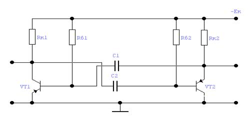
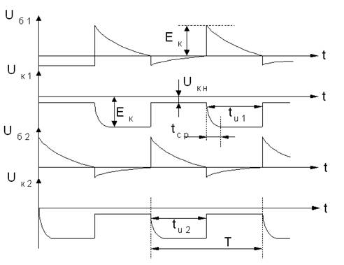
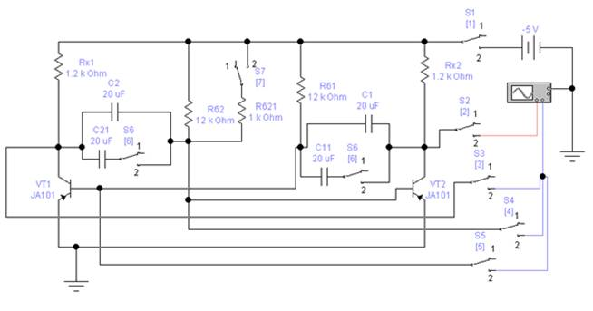
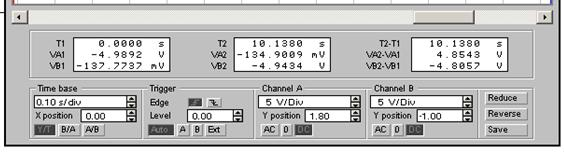

Розробив: Малярчук В.О.
Час виконання роботи 4 год
Лабораторна робота № 9
Дослідження мультивібратора на біполярних транзисторах
Ціль роботи
1. Придбання практичних навичок при побудові часових діаграм і визначенні параметрів вихідних імпульсів мультивібратора.
2. Експериментальне дослідження впливу зміни номіналів елементів, що змінюють час переключення мультивібратора, на вихідні параметри мультивібратора.
Короткі теоретичні відомості
Автоколивальним мультивібратором називається генератор прямокутних імпульсів на двох біполярних транзисторах із однаковими параметрами, заданою тривалістю і частотою повторення. Мультивібратори застосовуються в тих випадках, коли немає жорстких вимог до стабільності імпульсів, що генеруються. Схема симетричного мультивібратора приведена на рис.1.

Рис. 1. Принципова схема мультивібратора
Схема має перехресні позитивні зв’язки транзисторних каскадів, що здійснюються через конденсатори С1 і С2. Елементи С1, Rб1 і С2, Rб2 називаються часозадаючими. Від їх номінальних значень залежать тривалість tu імпульсів, їх фронти tср і частота повторення. Якщо С1=C2 і Rб1=Rб2, то мультивібратор називається симетричним і тривалість імпульсів на виході Uвих1= Uвих2 і tu1=tu2.
Часова діаграма мультивібратора приведена на рис.2. В цьому випадку Т=tu1+tu2.
Тривалість імпульсу формується в залежності від часу розряду конденсатора С і рівна: tu=0.7 Rб С.
Тривалість переднього фронту tср=3 Rк С.
Якщо в мультивібраторі С1¹С2 и Rб1 ¹Rб2 то мультивибратор называется несимметричным и tu1 ¹tu2, а скважність Q=T/ tu >2.

Рис. 2. Часова діаграма симетричного мультивібратора
Опис віртуальної лабораторної установки
Віртуальна лабораторна установка приведена на рис.3

Рис. 3. Принципова схема віртуальної лабораторної установки для дослідження мультивібратора
складається з мультивібратора на двох біполярних транзисторах p-n-p тип; джерела колекторного живлення з напругою від -5 В до -10 В; 4-х часозадаючих конденсаторів, які за допомогою перемикача S6 можуть підключатися паралельно (при цьому ємності конденсаторів збільшуються); перемикача S7 за допомогою якого до часозадаючого резистора Rб2 паралельно підключається резистор Rб21 (загальний опір при цьому зменшується); перемикачів S3, S4, S5 для підключення до другого каналу осцилографа “B” різних точок схеми; перемикача S1 для підключення джерела колекторного живлення до схеми; двоканального осцилографа, канал “A” якого постійно підключений до колектора транзистора VT2, а в канал “B” подаються сигнали з різних точок схеми мультивібратора.
Домашнє завдання
Вивчити принцип дії і призначення елементів схеми мультивібратора.
Завдання і порядок виконання роботи
1. Відкрийте файл Вар_ФКС.xls в відповідності з своїм варіантом випишіть значення величин (напругу джерела колекторного живлення, марку транзисторів VT1, VT2, ємності часозадаючих конденсаторів С1, С11, С2, С21).
2. Відкрийте файл Лаб_9.ewb в відповідності з своїм варіантом виставте параметри величин, що входять в віртуальну лабораторну установку.
3. Підготувати лабораторну установку до роботи:
– перемикачі S1, S2, S3, S4, S5, S6, S7 встановити в положення 1 (вимкнено) за допомогою відповідних клавіш;
– підготувати осцилограф до роботи. Встановити значення масштабів (значення приведені для одного із варіантів завдання):

4. Включивши лабораторну установку, за допомогою осцилографа зняти і побудувати повну часову діаграму мультивібратора для часозадаючих конденсаторів С1, С2:
а) на перший канал осцилографа подати сигнал з колектора транзистора VT2. Для цього перевести перемикач S2 в положення “2” На другий канал осцилографа подати сигнал з колектора транзистора VT1. Для цього перевести перемикач S3 в положення “2”. Подати живлення на схему мультивібратора. Для цього перевести перемикач S1 в положення “2”. Замалювати в масштабі осцилограму вихідних імпульсів мультивібратора. За допомогою вертикальних вимірювальних ліній осцилографа визначити наступні параметри імпульсів: tu1, tu2, tср, Т, Uвих – амплітуду вихідних імпульсів, Uк.н- напругу насичення (дивитися рис.3), Q;
б) відключити другий канал “B” осцилографа (перемикач S3 перевести в положення “1”). Підключити другий канал “B” осцилографа до бази транзистора VT2, перемикачем S4 в положення “2”. Домальовувати до тимчасової діаграми осцилограму базової напруги VT2. Після цього перемикач S4 перевести в положення “1”
в) на другий канал “B” осцилографа подати сигнал з бази транзистора VT1. Для цього перевести перемикач S5 в положення “2”. Домальовувати до часової діаграми осцилограму базової напруги транзистора VT1. Перевести перемикач S5 в положення “1”.
5. Збільшити значення часозадаючих конденсаторів. Для цього перемикачі S6 перевести в положення “2”. Повторити пункт 4.
6. Зробити мультивібратор несиметричним, збільшивши значення часозадаючого резистора в базовому ланцюзі транзистора VT2. Для цього перемикач S7 перевести в положення “2”. Повторити пункт 4.
7. Вимкнути схему.
Зміст звіту
Звіт повинен бути оформлений на листах паперу і містити:
- Ціль лабораторної роботи і номер варіанту.
- Принципову схему віртуальної лабораторної установки.
- Повну часову діаграму мультивібратора при мінімальних значеннях часозадаючих конденсаторів. Значення параметрів: tu1, tu2, tср, Т, Uвих, Uк.н, Q.
- Часову діаграму вихідної напруги мультивібратора для максимального значення часозадаючих конденсаторів і значення параметрів: tu1, tu2, tср, Т, Uвих, Uк.н, Q.
- Часову діаграму вихідних імпульсів для несиметричного мультивібратора.
- Висновки, що базуються на аналізі отриманих результатів і їх порівняння з теоретичними положеннями.
Контрольні питання
- Ціль лабораторної роботи і номер варіанту.
- Принципову схему віртуальної лабораторної установки.
- Повну часову діаграму мультивібратора при мінімальних значеннях часозадаючих конденсаторів. Значення параметрів: tu1, tu2, tср, Т, Uвих, Uк.н, Q.
- Часову діаграму вихідної напруги мультивібратора для максимального значення часозадаючих конденсаторів і значення параметрів: tu1, tu2, tср, Т, Uвих, Uк.н, Q.
- Часову діаграму вихідних імпульсів для несиметричного мультивібратора.
- Висновки, що базуються на аналізі отриманих результатів і їх порівняння з теоретичними положеннями.